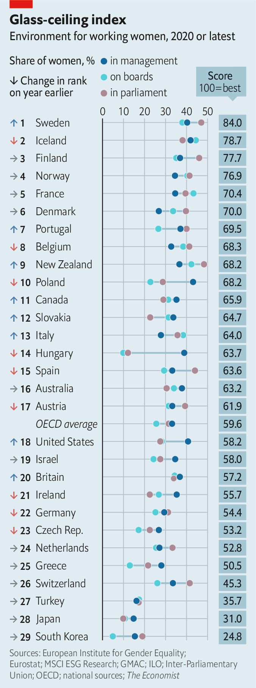

2021-03-07T14:21:10+00:00
玻璃天花板指数
更多裂缝出现
女性高管的境况在改善——但还是太慢

三月一日，华尔街的玻璃天花板终于开裂了。简·弗雷泽（Jane Fraser）接管花旗集团，成为第一个执掌美国大型银行的女性。美国企业界其余的角落也回荡着玻璃破裂的声音。去年，卡罗尔·托梅（Carol Tomé）成为包裹递送巨头UPS的老板。今年1月，罗莎琳德·布鲁尔（Rosalind Brewer）接掌药店连锁沃博联（Walgreens Boots Alliance），成为有史以来仅仅第三个掌管财富500强公司的黑人女性。一个月后，塔桑达·布朗·达克特（Thasunda Brown Duckett）被任命管理大型养老基金美国教师退休基金会（TIAA）。
在本刊衡量女性赋权水平的玻璃天花板年度指数中，美国的排名低于工业化国家俱乐部经合组织的平均水平，原因是它在育儿假和政治代表性方面得分不佳。但美国女性在管理层和公司董事会中的比例较高，分别是41%和28%。美国的这两个比例都高于主张平等主义的德国，后者在1月份颁布了女性董事配额制（目前德国女性在管理层和董事会的占比分别为29%和25%）。
大多数国家都还有很长的路要走。在经合组织的37个成员国中，只有三分之一的管理职位由女性担任。咨询公司SIA Partners近期的一项研究发现，在英国，女性在企业高级职位招聘中仍面临系统性的偏见。
不过，即便是在日本等一贯吊车尾的国家也至少能看到一些进步的迹象。森喜朗抱怨女性在会议上话太多，后来不得不在2月辞去了东京奥组委主席一职。一位女士取代了他。
完整结果请见economist.com/glassceiling2021
2021-03-07T14:21:10+00:00
The glass-ceiling index
More cracks appear
The lot of female executives is improving—but still too slowly
WALL STREET’S glass ceiling cracked at last on March 1st, as Jane Fraser took charge of Citigroup, becoming the first woman to head a big American bank. That cracking sound has also been echoing across the rest of America Inc. Last year Carol Tomé became boss of UPS, a package-delivery giant. In January Rosalind Brewer became only the third black woman ever to run a
America ranks below the average for the OECD club of industrialised countries in
Most countries have a long way to go. Just one in three managerial positions across the OECD’s 37 members is occupied by a woman. A recent study by SIA Partners, a consultancy, found that in Britain bias against women in senior corporate hiring remains systemic.
At least signs of progress can be seen even in traditional laggards like Japan. Mori Yoshiro had to resign as chief of the Tokyo Olympics in February after he complained that women talked too much in meetings. A woman replaced him.
Full results can be found at economist.com/glassceiling2021
2021-03-07T14:21:10+00:00
玻璃天花板指數
更多裂縫出現
女性高管的境況在改善——但還是太慢
三月一日，華爾街的玻璃天花板終於開裂了。簡·弗雷澤（Jane Fraser）接管花旗集團，成為第一個執掌美國大型銀行的女性。美國企業界其餘的角落也回蕩着玻璃破裂的聲音。去年，卡羅爾·托梅（Carol Tomé）成為包裹遞送巨頭UPS的老闆。今年1月，羅莎琳德·布魯爾（Rosalind Brewer）接掌藥店連鎖沃博聯（Walgreens Boots Alliance），成為有史以來僅僅第三個掌管財富500強公司的黑人女性。一個月後，塔桑達·布朗·達克特（Thasunda Brown Duckett）被任命管理大型養老基金美國教師退休基金會（TIAA）。
在本刊衡量女性賦權水平的玻璃天花板年度指數中，美國的排名低於工業化國傢俱樂部經合組織的平均水平，原因是它在育兒假和政治代表性方面得分不佳。但美國女性在管理層和公司董事會中的比例較高，分別是41%和28%。美國的這兩個比例都高於主張平等主義的德國，後者在1月份頒布了女性董事配額制（目前德國女性在管理層和董事會的佔比分別為29%和25%）。
大多數國家都還有很長的路要走。在經合組織的37個成員國中，只有三分之一的管理職位由女性擔任。諮詢公司SIA Partners近期的一項研究發現，在英國，女性在企業高級職位招聘中仍面臨系統性的偏見。
不過，即便是在日本等一貫吊車尾的國家也至少能看到一些進步的跡象。森喜朗抱怨女性在會議上話太多，後來不得不在2月辭去了東京奧組委主席一職。一位女士取代了他。
完整結果請見economist.com/glassceiling2021